У каждой эмиграции есть точная дата, но нет точного момента. Дата — это билет, штамп в паспорте, посадочный талон, который зачем-то не выбрасываешь. Момент наступает позже и всегда врасплох: когда слово «дома» в разговоре вдруг начинает требовать уточнения — дома где; когда ловишь себя на том, что квартира, в которой прошла половина жизни, снится тебе как чужая. В феврале 2022 года по нашей жизни прошла трещина — тонкая, как щель света между штор, — и всё, что было цельным, распалось на «до» и «после». Мы уезжали, не зная, как это назвать: командировка, переждать, посмотреть, как пойдёт. Жизнь осталась стоять накрытой плёнкой, как мебель в квартире, куда обещали вернуться. Этот проект — не о новостях и не о стране. Он о человеке, который однажды закрыл за собой дверь — и до сих пор не знает, запер он её или оставил открытой.
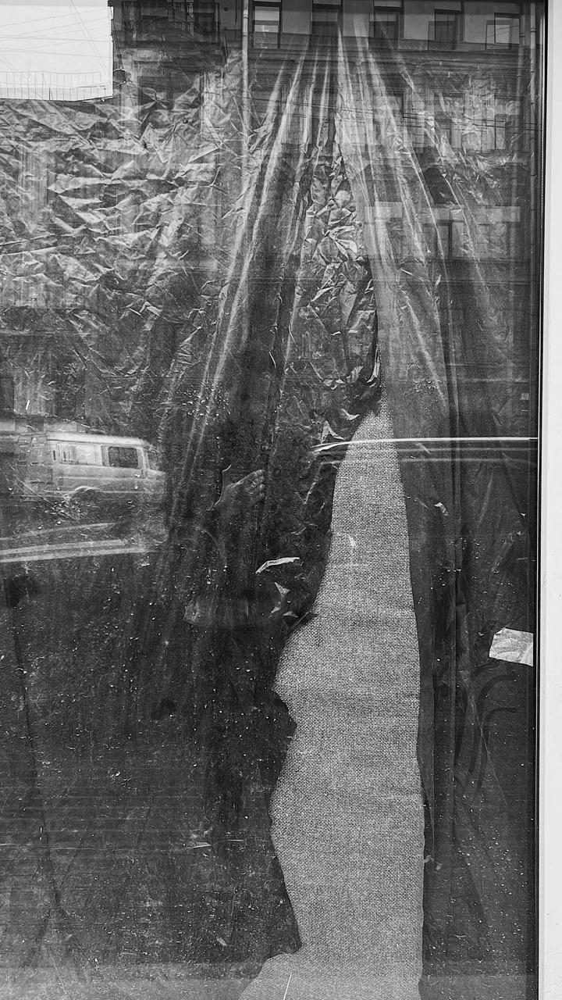
«Нарушила свой запрет и оглянулась. И вот, как жена Лота, застыла, остолбенела навеки и веки видеть буду, как тихо, тихо уходит от меня моя земля».
— Тэффи · «Воспоминания» · 1932Такое уже было — с точностью до жеста. 10 августа 1922 года ВЦИК принял декрет «Об административной высылке»: теперь человека можно было выслать из страны без суда, росчерком, «в административном порядке». 29 сентября от петроградской пристани отошёл немецкий пароход «Обербургомистр Хакен» — на борту Бердяев, Франк, Ильин, Трубецкой, Осоргин; в ноябре следом ушёл «Пруссия» с Лосским и Карсавиным. Двумя рейсами — больше ста шестидесяти человек; всей операцией 1922–1923 годов, считая поезда на Ригу и пароходы из Одессы, — по разным подсчётам от 228 до 272 высланных: философы, профессора, врачи, агрономы. Троцкий объяснил иностранной прессе с редкой прямотой: «Мы этих людей выслали, потому что расстрелять их не было повода, а терпеть было невозможно» — слова сохранил в пересказе Михаил Осоргин, пассажир того же рейса, назвавший свой очерк об этом безошибочно: «Как нас уехали». Имя «философский пароход» появится только в 1990-м. А через сто лет история повторила маршрут, сменив транспорт: в 2022-м люди сами покупали билеты в один конец — Стамбул, Ереван, Тбилиси — и рейсы той весны пресса назовёт «философскими самолётами». Разница в том, что пароход был приговором, а самолёт — выбором. Сходство в том, что ни те, ни другие не знали, что уезжают навсегда.
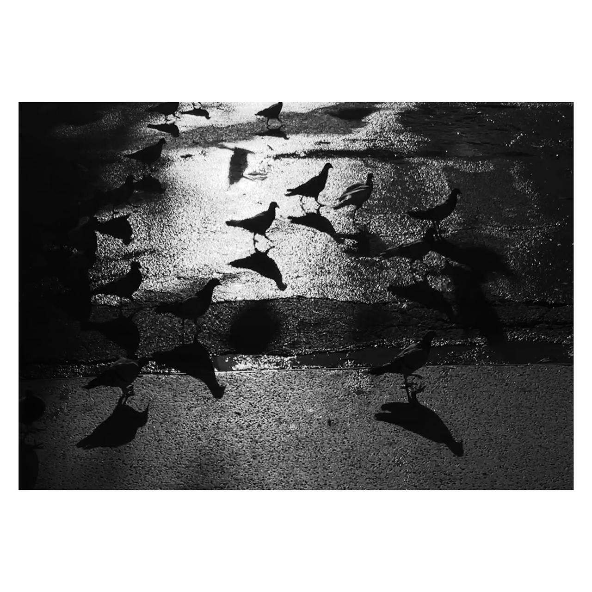
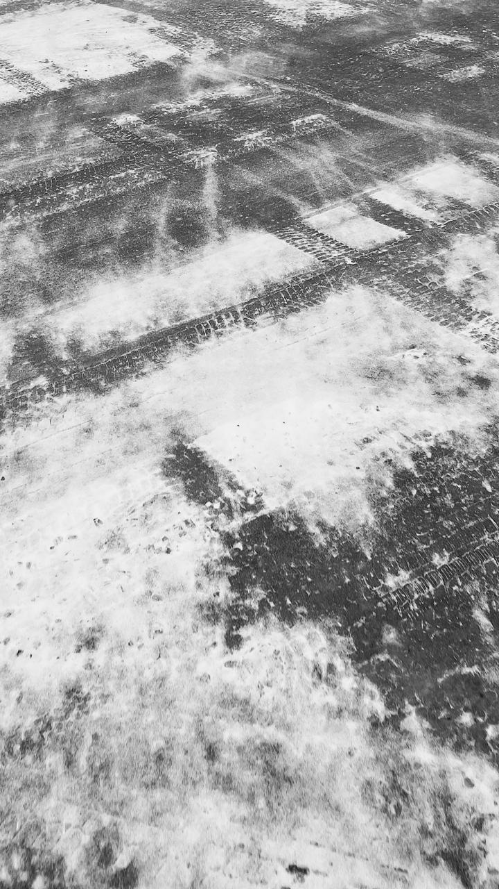
«Была Россия, был великий, ломившийся от всякого скарба дом, населённый огромным и во всех смыслах могучим семейством…»
— Иван Бунин · «Миссия русской эмиграции» · Париж, 1924Чужой город сначала притворяется отпуском. Он красив той красотой, к которой ты не имеешь отношения: каналы, фасады, колокольни — всё это складывалось веками без тебя и прекрасно обойдётся без тебя дальше. Потом отпуск заканчивается, а ты остаёшься. Начинается особый жанр существования — съёмное жильё: стены, к которым нельзя прибить полку, посуда, выбранная не тобой, запах чужого порошка на наволочке. Цветаева нашла для этого формулу, точнее которой за сто лет так и не появилось: дом, «и не знающий, что — мой». Ты учишься жить в зазоре — между языком, на котором думаешь, и языком, на котором покупаешь хлеб; между городом за окном, размытым, как сквозь сетку, и городом, который снится в фокусе. Эмигранты двадцатых читали газеты «оттуда» и, по слову Тэффи, интересовались «только тем, что приходит оттуда»; мы точно так же листаем ленты — та же ностальгия, переехавшая в телефон. Сто лет прогресса ушло на то, чтобы тоска по дому стала обновляться в реальном времени.
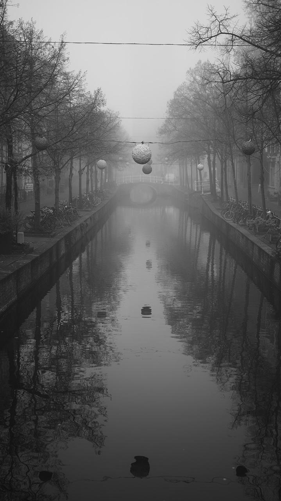
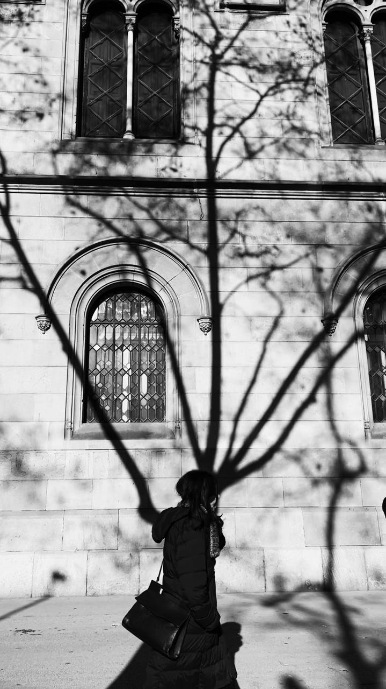
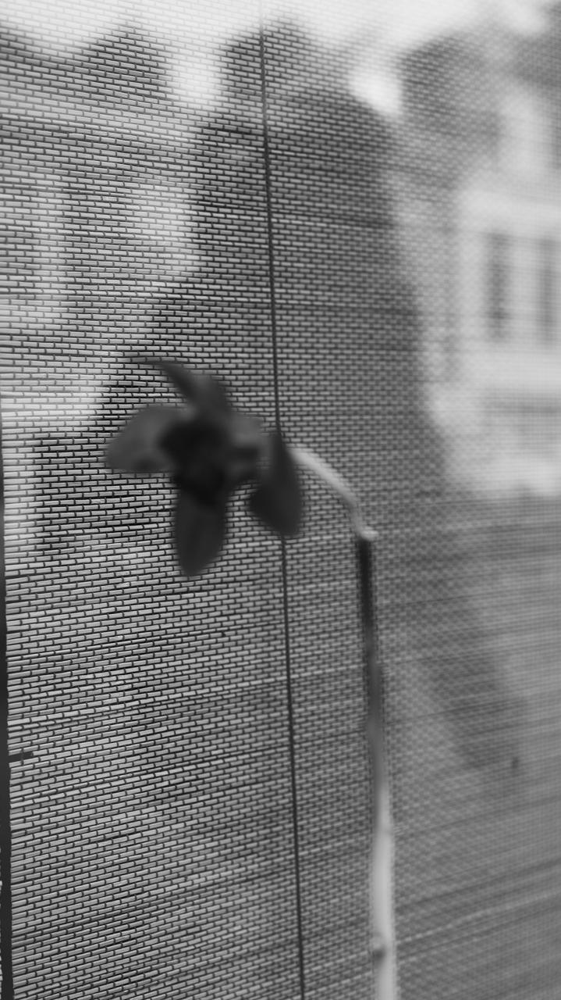
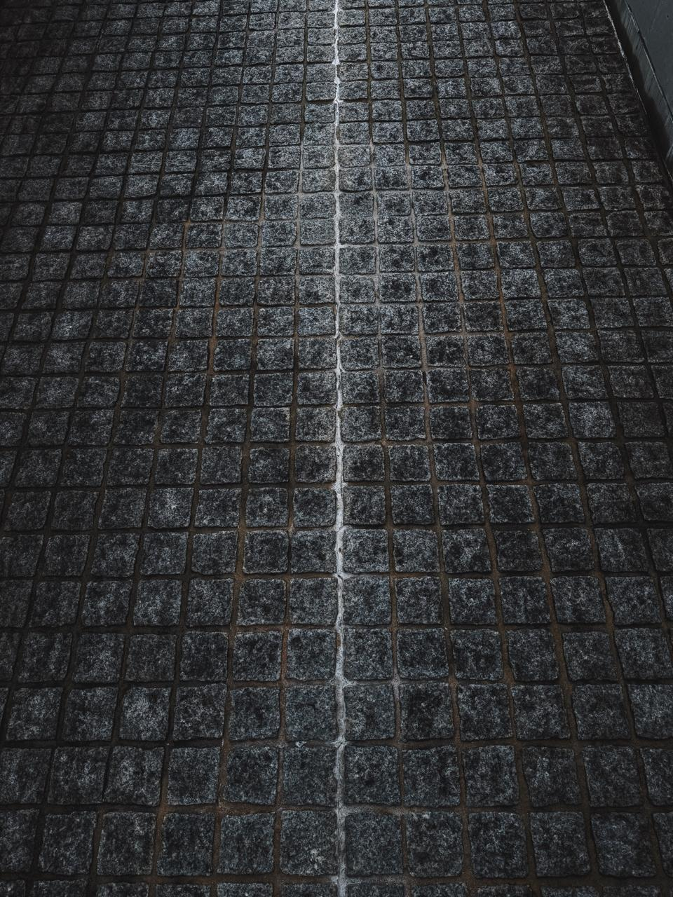
«Всё меня выталкивает в Россию, в которую я ехать не могу. Здесь я не нужна. Там я невозможна».
— Марина Цветаева · из письма А. Тесковой · 1931А потом оптика переворачивается. В какой-то момент — у всех он свой — перестаёшь искать дом снаружи и обнаруживаешь, что часть его всё это время ехала с тобой. Ходасевич, уехавший тем же летом 1922 года, вёз в дорожном мешке восемь томиков Пушкина и называл их «вся родина моя». У каждого свой список того, что не сдаётся в багаж: язык, на котором молчишь; тело — единственная территория, которую невозможно ни отнять, ни покинуть, — его кожа с годами сама становится похожа на карту рельефа; плечо родного человека, которое ближе любого гражданства; постель, которую стелешь одинаково в любой стране, и складки белья по утрам похожи на холмы — всегда одни и те же, в Петербурге и в Барселоне. Дом, выясняется, — не точка на карте. Это то, что нельзя оставить, даже если очень стараться.
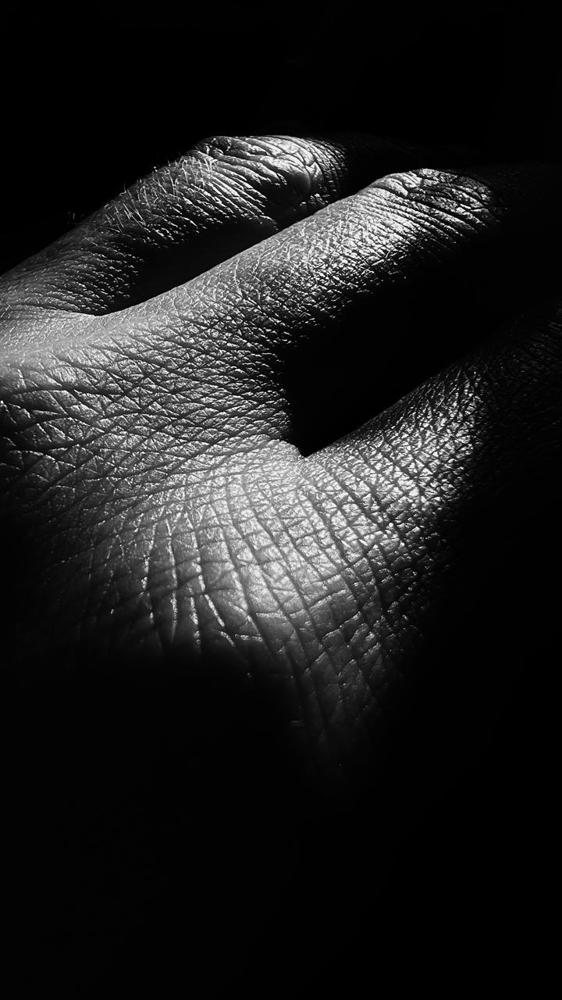
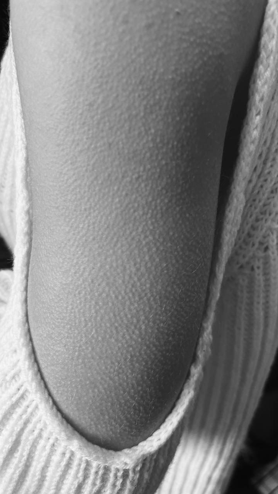
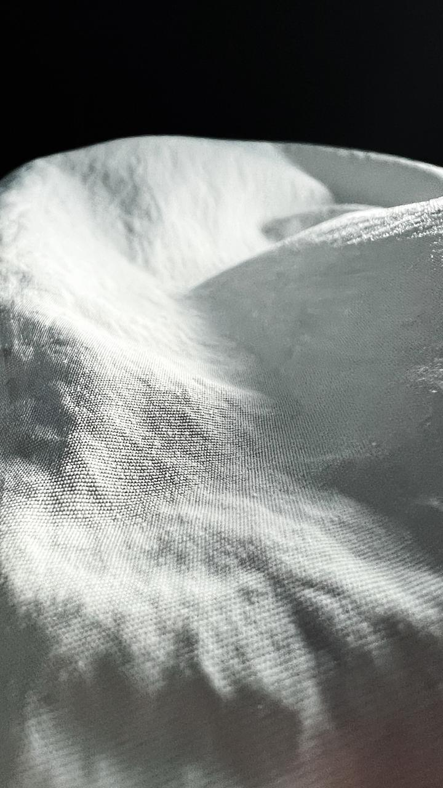
«А я с собой свою Россию / В дорожном уношу мешке».
— Владислав Ходасевич · 1923Птицам проще. Они снимаются с места, когда приходит время, летят тысячи километров и не называют это эмиграцией. У них нет слова «родина» — поэтому нет и ностальгии; дом у них всегда при себе, как у собаки, которой довольно кромки любого моря. В чужих городах начинаешь всматриваться в живое с особым, почти завистливым вниманием: вот пара идёт рядом по чужому газону — и им достаточно друг друга; вот один на проводе уже раскрыл крылья, а остальные ещё сидят. Человеку сложнее, потому что его дом хранится не в инстинкте, а в памяти, — а память живёт не в голове, в теле. Дон-Аминадо, парижский изгнанник, помнил родину запахом: мята, копоть, дым, «пыльная уездная сирень». Запах не переводится ни на один язык и не проходит таможню — он просто настигает тебя посреди чужой улицы, и на секунду ты дома. Потом отпускает.
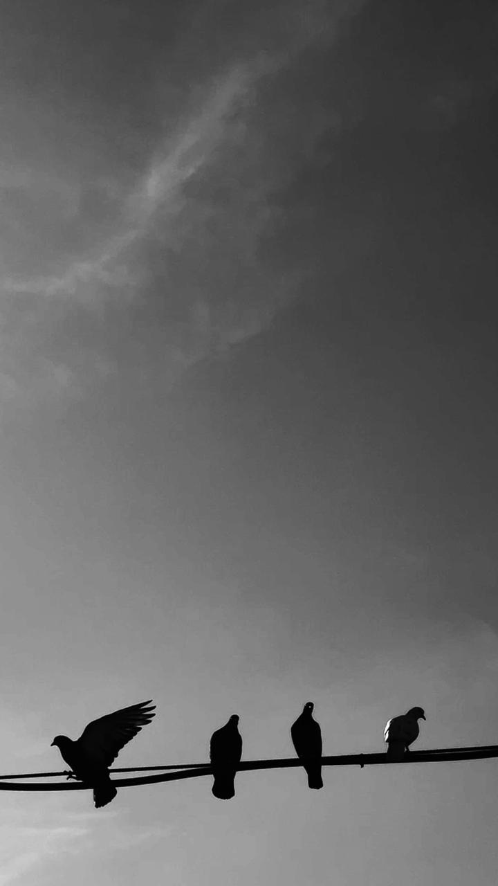
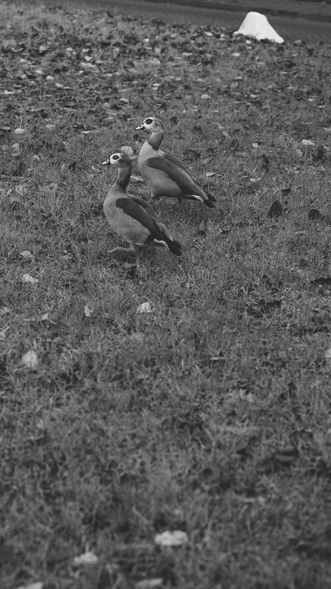
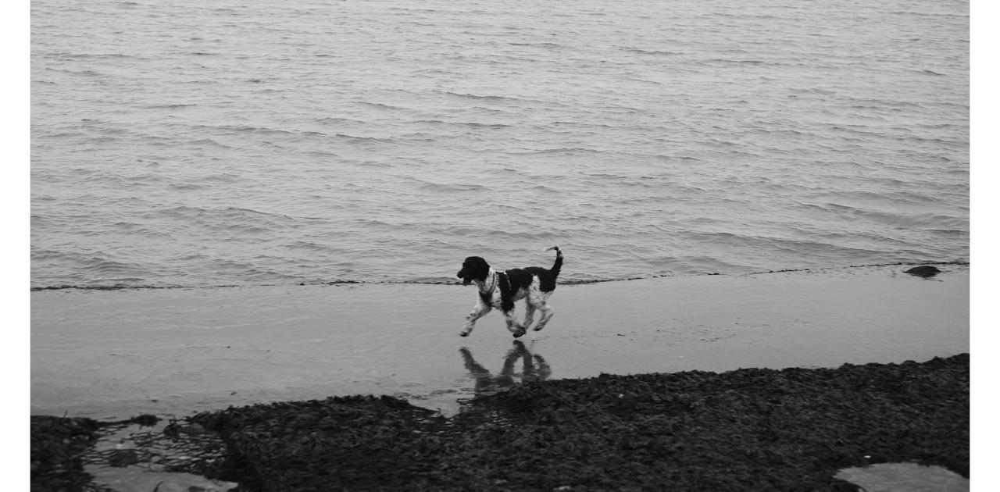
«Тем запахом, волнующим до слёз, / Единственным, родным, неповторимым…»
— Дон-Аминадо · «Уездная сирень» · 1920-еПитирим Сорокин — за считаные дни до того, как его посадят на пароход, — записал в дневнике, что твёрдо знает одно: «Жизнь, даже если она трудна, — самое прекрасное, чудесное и восхитительное сокровище мира». Это писал человек, у которого только что отняли страну. Флаги, из-за которых всё начинается, против солнца теряют цвет — остаётся просто ткань на ветру; а свет на воде один и тот же в любом море, и он никому не принадлежит. Поиски дома, кажется, не заканчиваются находкой — они вообще не заканчиваются: те, с парохода, искали его до конца жизни, кто в Париже, кто в восьми томиках, кто в послании. Но, может быть, в этом и ответ. Дом — не то, что однажды находят и запирают на ключ. Дом — это те, с кем ищешь, и то, чем ищешь: язык, память, кожа, свет. Всё это у нас с собой. Значит, мы не бездомные. Мы — в пути.
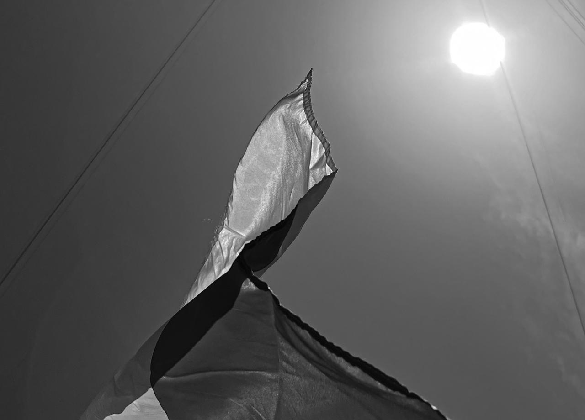
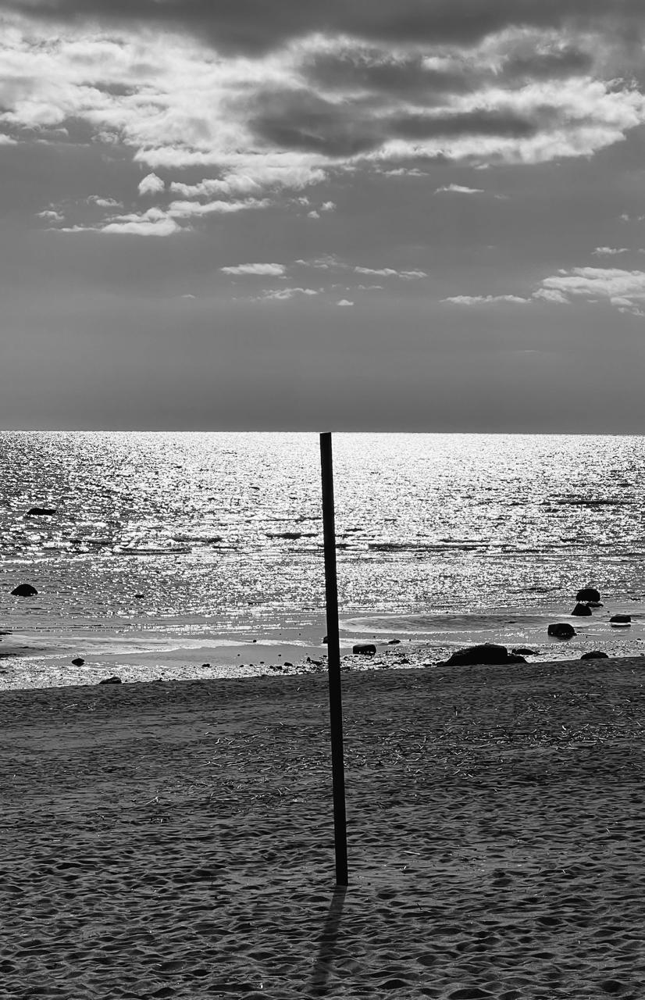